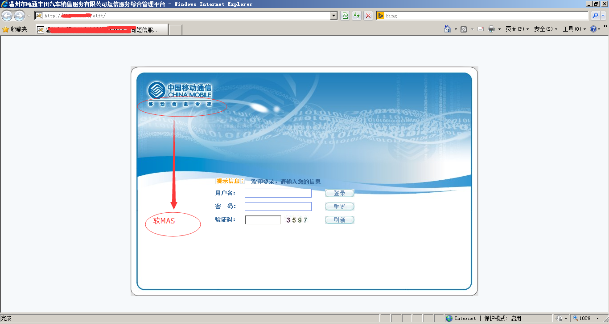

1.1.
产品简介
1.2.
信息机产品类型
1.2.1.
什么是云化版
1.2.2.
什么是单机版
1.2.3.
什么是多用户版
1.2.4.
什么是高端机
1.2.5.
什么是嘉讯信息机
1.2.6.
什么是华为信息机
1.2.7.
集团云MAS和软MAS等
1.3.
常见业务问题
1.3.1.
常见词汇术语
1.3.2.
常见网关代码
1.3.3.
登录信息错误
1.3.4.
登录页面打不开
1.3.5.
登录验证码收不到
1.3.6.
发送失败
1.3.7.
发送成功实际未收到
1.3.8.
号码文件和通讯录
1.3.9.
如何群发短信
1.3.10.
如何群发点点通短信（工资条短信）
1.3.11.
如何发送温馨关怀
1.3.12.
如何找回密码
1.3.13.
找回密码提示“信息输入错误”
1.3.14.
如何更改用户的手机号码
1.3.15.
忘记管理员手机号码
1.3.16.
如何添加子账号
1.3.17.
如何查询发送记录和统计
1.3.18.
如何修改短信签名
1.3.19.
如何附加姓名
1.3.20.
短信签名与附加姓名的区别
1.3.21.
页面上的功能按钮都没有反应？
1.3.22.
网络的互联互通问题
1.3.23.
服务器错误500 501 502 503 504 505详解
1.4.
常见故障处理
1.4.1.
web平台常见问题
1.4.2.
二次开发接口常见问题
1.4.3.
安装部署中常见问题
1.4.4.
客户侧安装单机版的前提条件
1.4.5.
数据库服务常见问题
1.5.
开通变更流程
1.5.1.
常见参数配置变更流程
1.5.2.
如何开通和获取接口信息
1.6.
反馈与建议
本書使用 GitBook 釋出
集团云MAS和软MAS等
集团云MAS和软MAS等
非浙移集成产品，不在浙移集成维护范畴之内，不提供技术咨询及服务，属于移动其它厂家的信息机
：比如软MAS、E管家、自建平台等。。。
软MAS登录页面：

集团云MAS登录页面：
results matching "
"
No results matching "
"